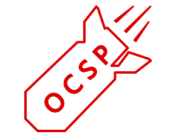

Last update: Thursday, 22 September 2016 18:55:00 +0800
OpenSSL OCSP Status Request extension unbounded memory growth (CVE-2016-6304)
Overview

There is a serious vulnerability in the OCSP Status Request extension of OpenSSL. This vulnerability allows malicious client to exhaust the server's memory. A server with default configuration would allow unbounded memory allocation of the OCSP ids every time a renegotiation occurs even if the server is not configured with OCSP. The OCSP id can, according to the spec, consume up to 65,535 bytes of memory. Theoretically, an attacker could continually reneg with the server thus causing unbounded memory growth on the server up to 64k each time. In 1.0.2 an attacker could grow the memory usage on the server by approx 16k per reneg as the maximum overall ClientHello size is set to 16,384 bytes. In version 1.1.0, along with the maximum size of a ClientHello increased to 131,396 bytes, the memory growth would be near 64k per reneg.
Countermeasures
You can apply software updates from each software vendors. Refer to the URLs below.
Problem
A. The attacker could send an excessively large OCSP Status Request extension to cause a Denial of Service attack to the server.
Q. How does the vulnerability work?
A. The attacker could use the TLS extension "TLSEXT_TYPE_status_request" and fill the OCSP ids with continually renegotiation.
Q. What versions of OpenSSL are affected?
A. Affected Versions:
- OpenSSL 0.9.8h through 0.9.8v
- OpenSSL 1.0.1 through 1.0.1t
- OpenSSL 1.0.2 through 1.0.1h
- OpenSSL 1.1.0
Not Affected Versions:
- OpenSSL 1.0.1u
- OpenSSL 1.0.2i
- OpenSSL 1.1.0a
Q. What are the risks?
A. The attacker could request renegotiation with a large OCSP Status Request extension continually thus causing unbounded memory allocation on the server. This will eventually lead to a DoS attack through memory exhaustion. Servers with default configuration are vulnerable even if they do not support OCSP. Build using the "no-ocsp" option will be not affected.
Q. How to prevent the attacks?
A. Upgrade to the latest version.
Q. How widespread is this?
A. We only test some notable softwares, include OpenSSL Server, Nginx，and Apache. OpenSSL Server with default configuration are affected(Include:OpenSSL 0.9.8h through 0.9.8v、OpenSSL 1.0.1 through 1.0.1t、OpenSSL 1.0.2 through 1.0.1h、OpenSSL 1.1.0). Nginx version before 0.8.23 are affected. Apache version before 2.0 are affected, and Apache setting configuration option "SSLInsecureRenegotiation" with "on" are also affected.
Q. Do I need to regenerate my private keys or certificates?
A. No. Attackers could not steal your private keys through this vulnerability.
Q. Is this because of an SSL/TLS specification defect?
A. No. It is an implementation problem of OpenSSL.
Q. What protocol versions are affected?
A. All versions (SSL3.0, TLS1.0, TLS1.1, TLS1.2) are affected.
Q. What encryption algorithms are affected?
A. All encryption algorithms are affected. This bug is not related to any specific algorithms.
Q. Can I be aware of this kind of attack when it is happening?
A. It's hard to say, maybe you can find this by analyzing crash dump.
Q. How did you find this bug?
A. This bug was discovered by Shi Lei of the Gear Team, Qihoo 360 Inc. while doing code review.
Q. How did you handle this vulnerability?
A. We reported it to the official after we found this vulnerability.
References
You can use this logo under the terms of CC0. download logo in SVG format
{kind=link}
Acknowledgements
- We were very grateful to the CCS Injection team for sharing us their template.
- We were grateful to the Qihoo360 Information Security Department, NetOPS, Qiyun, and Hulk team for their help.
Change History
- First Version: (Thursday, 22 September 2016 18:55:00 +0800)